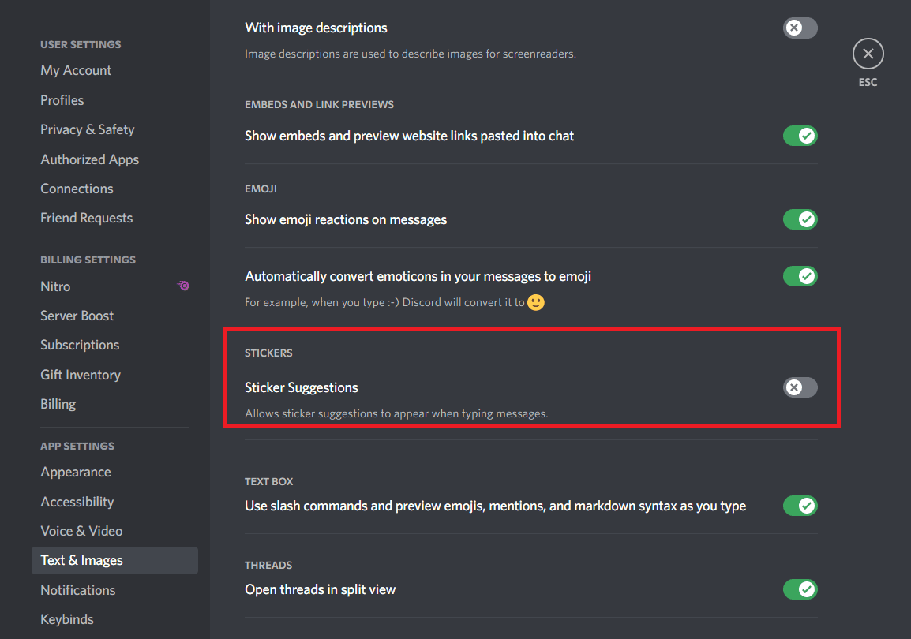
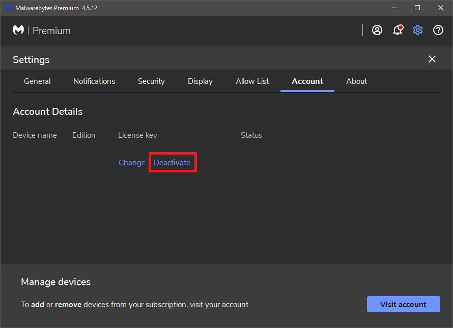
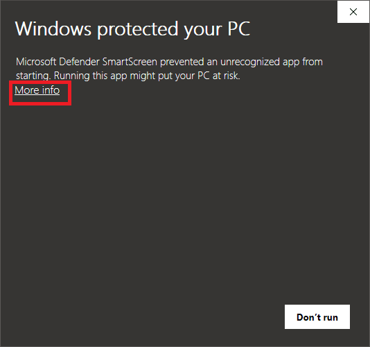
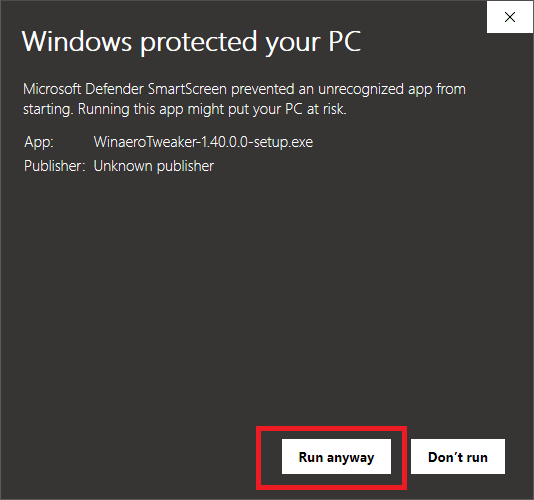
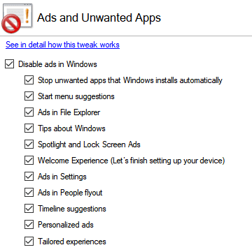
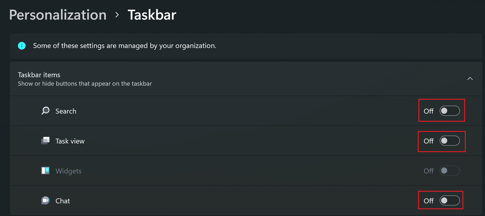
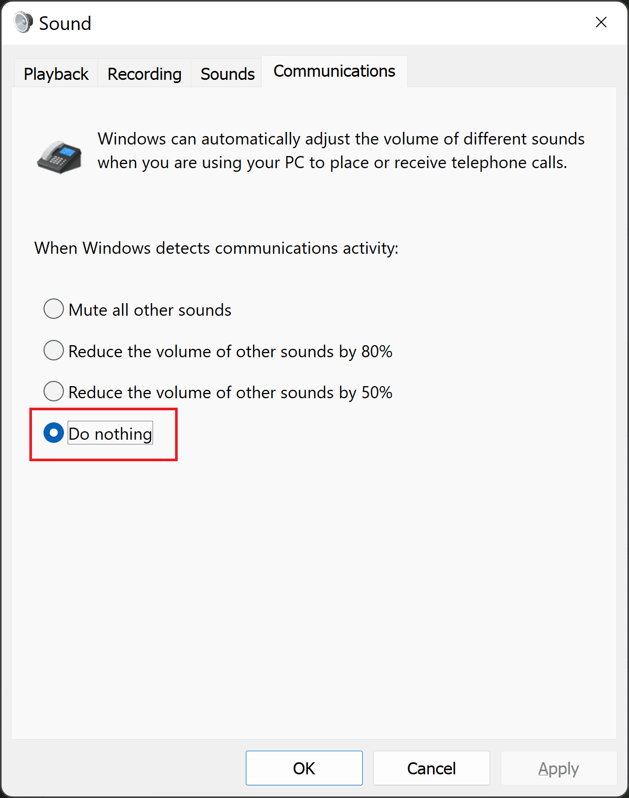

Recommended Setup and Software for Windows Installs
I've set up many Windows installations before, so I figured I'd share what I typically use to setup Windows.
This isn't an exhaustive list, but what I'd consider my "minimum viable Windows setup." Hope you find it useful!
Windows Setup Steps
- Clean install Windows 11.
- Use the "I don't have internet" method to pick the username of your choice that will be your User folder name.
- Opt-out of all data collection.
- Enable Dark Theme.
- Open Edge, visit Ninite.
- Install the following programs from ninite.com:
- Firefox - primary browser.
- qBittorrent - bit-torrent software.
- 7-Zip - archive software.
- Discord - communication software.
- VLC - media player.
- WinMerge - quickly compare files and folders.
- Malwarebytes - anti-malware software.
- WinDirStat - quickly see what folders/files are taking up the most space on your PC.
- Install additional software:
- WinAeroTweaker - make adjustments to Windows.
- FreeFileSync - backup your files in a straightforward way.
- Sign in with Microsoft Account. Now you have a custom-set User Folder name, and also the benefit of using the Windows Store / account sync etc.
- Sign into Firefox, confirm the following extensions are installed:
- Firefox Multi-Account Containers - manage multiple instances/accounts on one browser session.
- uBlock Origin - block ads.
- SponsorBlock - blocks out annoying segments in YouTube videos.
- Return YouTube Dislike - brings back the dislike button on YouTube.
- FireShot - capture an entire page in a screenshot.
- Bitwarden - password manager.
- Dark Reader - toggleable forced dark theme on any website.
- Setup Discord:
- Sign in.
- Settings > Text & Images > Disable Sticker Suggestions. 
- Malwarebytes: Enable Dark Theme + Disable Premium Free Trial.
- Open Malwarebytes.
- Click settings cog icon.
- Click Display.
- Select "Dark" under Theme.
- Click account.
- Click "Deactivate."
- 
- Setup WinAeroTweaker
- Click "More info" and then "Run anyway" when the Windows protected your PC window pops up.  
- Once installed, visit "Ads and Unwanted Apps" from the Behavior folder and check "Disable ads in Windows." 
- Select "Disable Online & Video Tips in Settings."
- Select "Disable Cortana."
- Select "Disable Windows Ink Workspace."
- Select "Enable Classic Paint."
- Select "Disable Telemetry and Data Collection."
- Select "Disable Action Center."
-

- Settings > System > Sound > More sound settings 
Obviously everyone will have their own workflows and desired software/setup. I figured I'd share mine nonetheless in case it helps someone out!